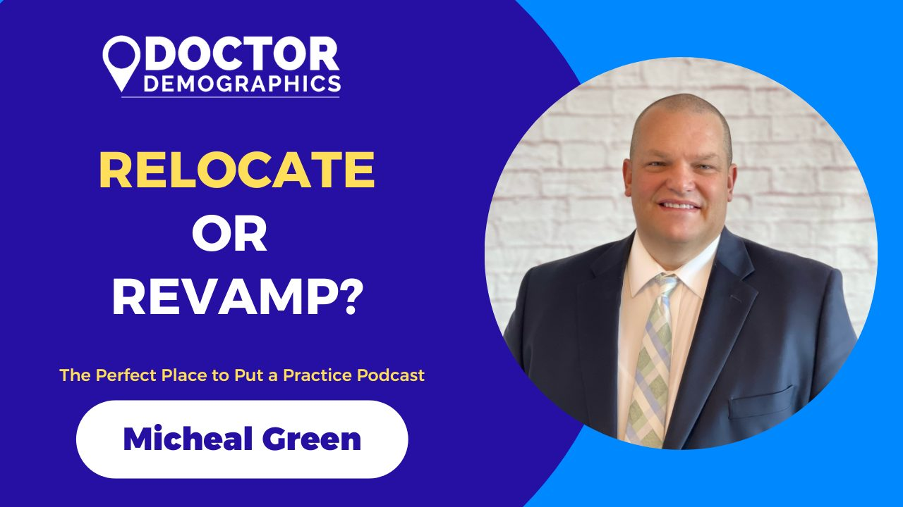
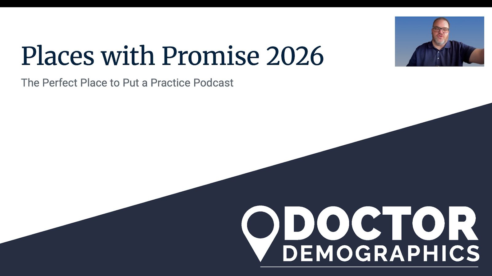

Articles and Podcasts

Relocate or Revamp
In this episode, we tackle a common dilemma for dentists, veterinarians, optometrists, and other practice owners: Should you relocate your struggling practice or revamp your marketing instead? Discove...
Big City Exodus
In this episode, we reveal the top five mid- and large-sized U.S. markets with the brightest futures for opening a practice in 2026. From booming population growth and strong economic outlooks to busi...

Places with Promise 2026
In this episode, we reveal the top five mid- and large-sized U.S. markets with the brightest futures for opening a practice in 2026. From booming population growth and strong economic outlooks to busi...
Kiss of Death Locations for 2026
In this eye-opening episode, we reveal the "Kiss of Death Locations for 2026", 8 markets (small, midsize, and large) that could spell disaster for new practice. From population loss and economic decl...

Launch Smart: 5 Demographic Factors for Your New Practice
Join Mike Green from Doctor Demographics on The Perfect Place to Put a Practice as we uncover the five demographic factors you need to know before opening your first practice. From population growth t...
Demographic Marketing
How to use demographic data from doctor demographics to create the perfect marketing strategy for your practice.